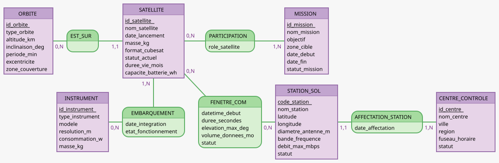

Module : ALTN83 — Bases de Données Réparties
Projet : NanoOrbit — CubeSat Earth Observation System
Groupe : 06 — Oscar DEBEURET / Geoffrey IBOS / Hugo LEROUX
Phase : Phase 1 — Conception & Architecture distribuée
Livrable : L1-B — Modèle Conceptuel de Données (MCD)

| Association | Entité A | Card. A | Card. B | Entité B | Justification |
|---|---|---|---|---|---|
| EST_SUR | ORBITE | 0,N |
1,1 |
SATELLITE | Une orbite peut exister sans satellite affecté (réserve orbitale) ; un satellite est sur exactement une orbite à un instant donné |
| EMBARQUEMENT | SATELLITE | 1,N |
0,N |
INSTRUMENT | Un satellite embarque au moins un instrument ; un instrument peut être en catalogue ou en test sans être embarqué |
| CONCERNE | SATELLITE | 0,N |
1,N |
FENETRE_COM | Un satellite peut n'avoir aucune fenêtre planifiée (inactif, hors couverture) ; une fenêtre concerne obligatoirement au moins un satellite — elle est définie par rapport à lui |
| RECOIT | FENETRE_COM | 1,N |
0,N |
STATION_SOL | Une fenêtre est nécessairement reçue par au moins une station sol ; une station peut n'avoir aucun passage planifié (hors service) |
| PARTICIPATION | SATELLITE | 0,N |
1,N |
MISSION | Un satellite peut exister sans mission (en attente, en panne) ; une mission mobilise obligatoirement au moins un satellite |
| AFFECTATION_STATION | STATION_SOL | 1,1 |
1,N |
CENTRE_CONTROLE | Chaque station est rattachée à exactement un centre de contrôle ; un centre supervise au moins une station |
Dans le MCD initial, FENETRE_COM était une entité-association entre SATELLITE et STATION_SOL. Elle a été transformée en entité autonome car elle porte 5 attributs propres (datetime_debut, duree_secondes, elevation_max_deg, volume_donnees_mo, statut) qui caractérisent un événement de communication indépendant, identifiable et archivable. Deux associations distinctes la relient à ses entités partenaires : CONCERNE (vers SATELLITE) et RECOIT (vers STATION_SOL).
Aucune association directe n'existe entre SATELLITE et STATION_SOL. Le lien est médiatisé par FENETRE_COM : SATELLITE → CONCERNE → FENETRE_COM → RECOIT → STATION_SOL. Cette architecture reflète la logique opérationnelle : c'est la fenêtre de communication, événement daté et qualifié, qui matérialise la relation entre les deux entités.
Bien que la contrainte soit simple (1 station = 1 centre), l'association porte l'attribut date_affectation. Elle est donc modélisée comme une association avec attribut plutôt que comme une simple clé étrangère dans STATION_SOL, ce qui permet de tracer l'historique des rattachements administratifs.
L'association EMBARQUEMENT porte trois attributs (date_integration, etat_fonctionnement, commentaire) qui caractérisent la relation entre un satellite et un instrument à un instant donné. Ces attributs n'appartiennent ni au satellite ni à l'instrument seuls, ce qui justifie leur portage par l'association plutôt que par l'une des deux entités.